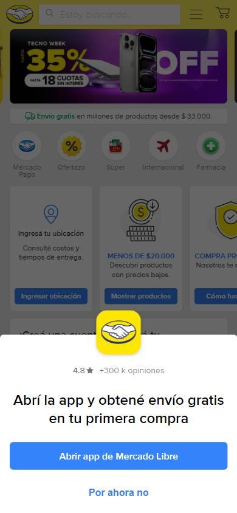
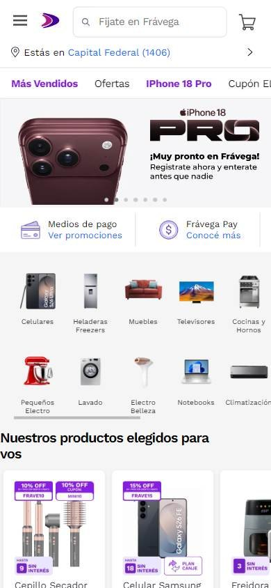
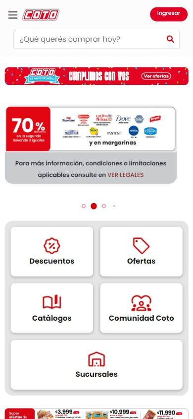

Tienda online que compite por buen precio
Los seleccionados
Los tres sitios más visitados de Argentina, según estadísticas de tráfico.
En resumen: lo que hacen los líderes
La pantalla de inicio de cada uno



Estilo visual
Colores, imágenes, tipografía y cuánta información muestran.
Tu estilo visual debería…
- Paleta acotada: un color de marca fuerte (el de tu logo) y el resto en blanco, gris y negro.
- Usá el color de marca solo en lo que tiene que destacar: banners, botones y precios.
- Fotos de producto sobre fondo blanco y banners con el número de la oferta en tipografía gruesa.
Lo que tienen en común: Los tres usan una paleta acotada: un solo color de marca fuerte sobre mucho blanco. El color del logo se repite en banners y botones, y el resto de la interfaz es neutra. Las imágenes son de producto o de campaña, con promociones en tipografía muy gruesa.
La paleta de cada uno
Medida sobre la primera pantalla. Los colores de marca salen del header; el resto muestra cuánto espacio ocupa cada color.
Así lo resuelve cada uno
Ficha comparativa
| Aspecto | Mercado Libre | Frávega | Coto |
|---|---|---|---|
| Paleta | Acotada: amarillo de marca + blanco y negro | Acotada: violeta de marca + blanco y gris | Acotada: rojo de marca + blanco |
| Relación con el logo | El color del logo domina el header | El violeta del logo aparece en banners y cupones | El rojo del logo aparece en banners y botones |
| Imágenes | Fotos grandes de campaña con personas | Ilustración y fotos chicas de producto sobre blanco | Fotos chicas de producto y logos de marcas |
| Tipografía | Sin serifa, peso medio | Sin serifa, títulos en negrita | Sin serifa, títulos muy gruesos en los banners |
| Densidad | Media: mucho contenido pero ordenado en tarjetas | Media-alta | Media |
| Botones | Rectos con esquinas apenas redondeadas, azul | Píldoras de color en cupones | Rojo en forma de píldora («Ver ofertas», «Ingresar») |
| Íconos | De línea, simples, en tarjetas de beneficios | Fotos de producto en lugar de íconos | De línea, en círculos, para accesos |
Header
La franja de arriba con el logo y los accesos.
Tu header debería…
- Logo a la izquierda, buscador en el centro, cuenta y carrito a la derecha.
- Fondo blanco y el color de tu marca solo en el logo y en un botón (por ejemplo «Ingresar»).
- Si hacés envíos, mostrá arriba a qué zona se envía.
Lo que tienen en común: Los tres arman el header igual: logo a la izquierda, buscador grande en el medio y la cuenta con el carrito a la derecha. El color de marca aparece en el logo y en uno o dos detalles; solo Mercado Libre pinta todo el header.
Así lo resuelve cada uno


Ficha comparativa
| Aspecto | Mercado Libre | Frávega | Coto |
|---|---|---|---|
| Fondo | Amarillo de la marca | Blanco | Blanco |
| LogoIgual en todos | A la izquierda | A la izquierda | A la izquierda |
| A la derecha | Ingresar, Mis compras y carrito | Mi cuenta y carrito | Botón rojo «Ingresar» |
| Lugar de envío visible | Sí («Enviar a…») | Sí («Estás en…») | No |
| Pisos | 2 | 3 (con franja de ayuda arriba) | 2 |
Buscador
La barra para buscar.
Tu buscador debería…
- Barra blanca de casi la mitad del ancho, baja (unos 40 px) y con borde gris claro.
- Esquinas apenas redondeadas y la lupa a la derecha, en el color de tu marca o en gris.
- Texto de ayuda en forma de invitación: «¿Qué querés comprar hoy?».
Lo que tienen en común: Es la pieza central del header en los tres: una barra blanca o casi blanca, baja y ancha, con la lupa a la derecha y un texto de ayuda que invita a buscar.
Así lo resuelve cada uno


Ficha comparativa
| Aspecto | Mercado Libre | Frávega | Coto |
|---|---|---|---|
| TamañoIgual en todos | Protagonista, casi la mitad del ancho | Protagonista, casi la mitad del ancho | Protagonista, casi la mitad del ancho |
| Color | Blanco sobre el amarillo | Gris muy claro con borde | Blanco con borde fino gris |
| FormaIgual en todos | Esquinas apenas redondeadas | Esquinas apenas redondeadas | Esquinas apenas redondeadas |
| Lupa | Gris, a la derecha | En un cuadrado gris, a la derecha | Roja, a la derecha |
| Texto de ayuda | «Buscar productos, marcas y más…» | «Fijate en Frávega» | «¿Qué querés comprar hoy?» |
Menú y categorías
Cómo se organizan las secciones.
Tu menú y categorías debería…
- Fila debajo del buscador, del mismo fondo que el header.
- Un botón «Categorías» a la izquierda (con ícono de menú) que despliega todo.
- Al lado, 4 a 6 accesos destacados: ofertas, más vendidos, cupones.
Lo que tienen en común: Las categorías van siempre arriba, en una fila debajo del buscador. Dos de los tres esconden el listado completo detrás de un botón «Categorías» y muestran al lado los accesos que más venden: ofertas y cupones.
Así lo resuelve cada uno

Ficha comparativa
| Aspecto | Mercado Libre | Frávega | Coto |
|---|---|---|---|
| Ubicación | Segunda fila del header | Fila propia debajo del header | Fila propia debajo del header |
| Cómo se ordenan las categorías | Botón «Categorías» + accesos destacados | Botón «Categorías» con ícono de menú + destacados | Todas en fila, con flechita para desplegar |
| Fondo | El mismo amarillo | Blanco | Blanco |
| Accesos destacados | Ofertas, Cupones, Supermercado, Moda | Más vendidos, Ofertas, cupones en violeta | — |
Primera pantalla
Lo primero que se ve debajo del header.
Tu primera pantalla debería…
- Carrusel de banners con una oferta concreta por banner (descuento, cupón o cuotas).
- Debajo, una fila de 4 a 6 accesos con íconos: envíos, medios de pago, ofertas.
- Usá el color fuerte de tu marca en el banner; el resto de la página, en blanco.
Lo que tienen en común: Los tres usan un carrusel promocional grande apenas debajo del menú, y justo debajo una fila de accesos o beneficios con íconos. El mensaje es siempre una oferta o un beneficio concreto.
Así lo resuelve cada uno
Ficha comparativa
| Aspecto | Mercado Libre | Frávega | Coto |
|---|---|---|---|
| Formato | Foto de campaña a todo el ancho | Promoción con cupón sobre el violeta de la marca | Promoción con el descuento enorme, en un bloque con márgenes |
| Se mueve (carrusel)Igual en todos | Sí | Sí | Sí |
| Botón | Sí | No (el cupón es el mensaje) | Sí, «Ver ofertas» |
| Debajo | Tarjetas de beneficios: envío, pagos, compra protegida | Medios de pago y círculos de categorías | Accesos con íconos: descuentos, ofertas, catálogos |